Conservation Genetics
BNS-2002: Genes, Development, and Evolution
Dr Axel Barlow
email: a.barlow@bangor.ac.uk
Lecture schedule
- Drift and variation (Evolution: Chapter 6)
- Conservation genetics (Evolution: Chapter 6)
- Phylogeny 1 (Evolution: Chapter 16)
- Phylogeny 2 (Evolution: Chapter 16)
Genetic drift summary
- Allele frequencies will change from one generation to the next due to chance events
- Such as survival, reproduction, and inheritance.
- Drift is unbiased, no allele is favoured
- Drift causes a loss of genetic variation (replaced by mutation or gene flow)
- Strength of drift is larger in small populations
- Drift causes populations to become different
- Selection share some features with drift, but alleles are favoured
- Selection is more effective when drift is weak
- We need to account for drift when testing for selection
Effective population size
Effective population size (Ne)
The effective population size (Ne) is the size of an idealised hermaphroditic population that would show the observed amount of drift
- Loosely, the effective number of breeding individuals
This is typically different to the census population size
- Age of reproduction
- Mating systems
- Population structure
- Sex ratio
- Non-random mating
Age of reproduction
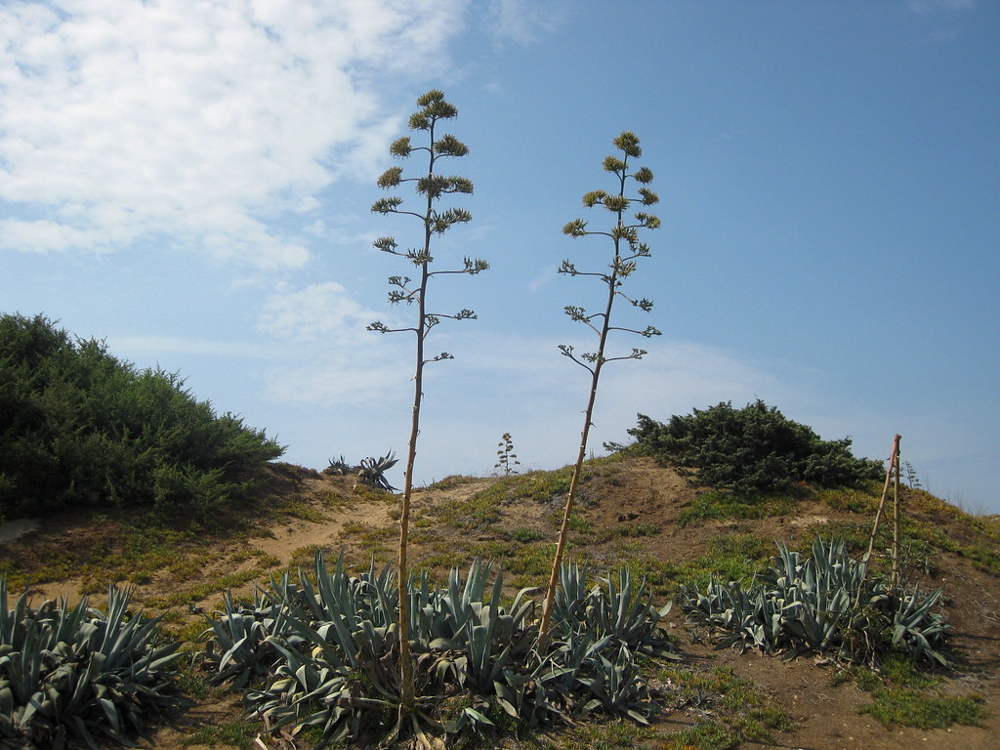
Mating systems
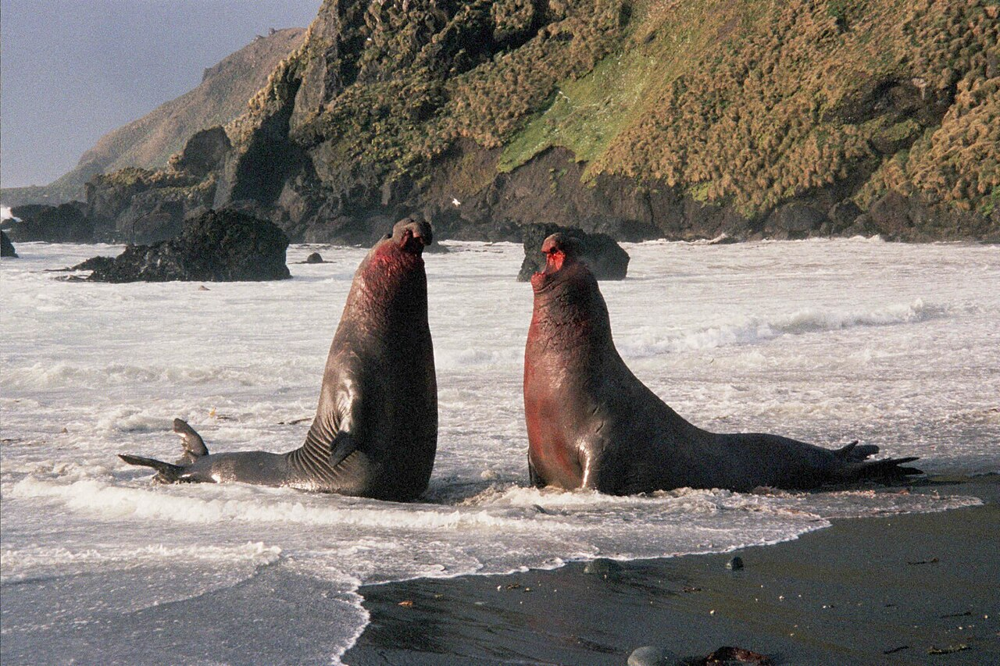
Population structure
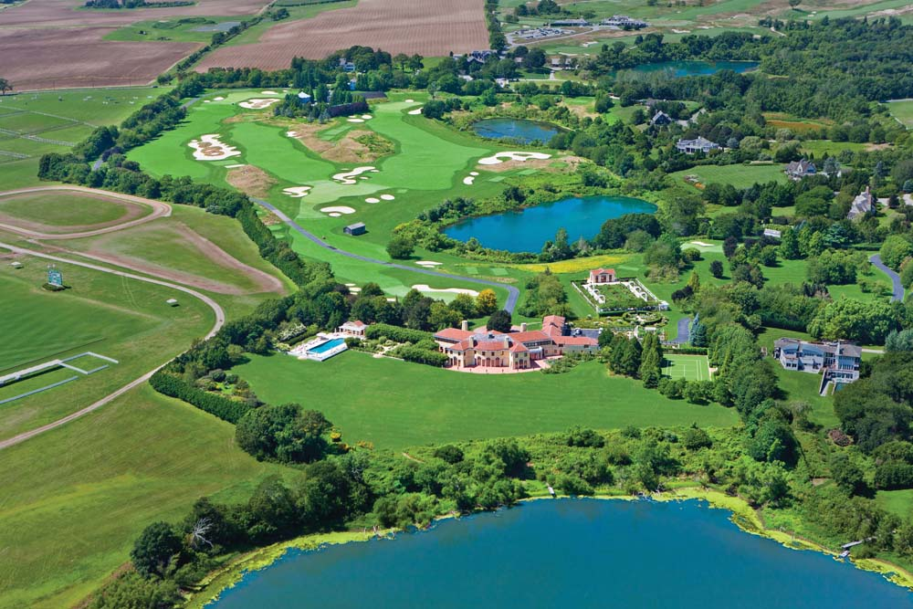
Sex ratio
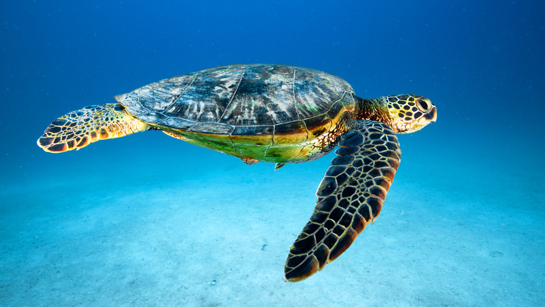
Non-random mating
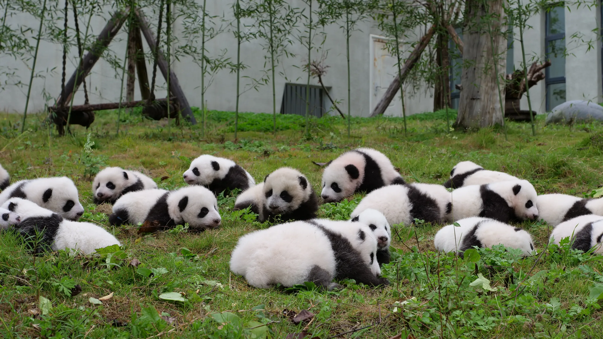
Loss of genetic variation associated with low Ne
Why is low genetic variation bad?
Smygehuk adders
- Population in Sweden
- Low Ne
- Isolated > 100 years
- low genetic diversity
- Population decline
- Many offspring deformed/stillborn
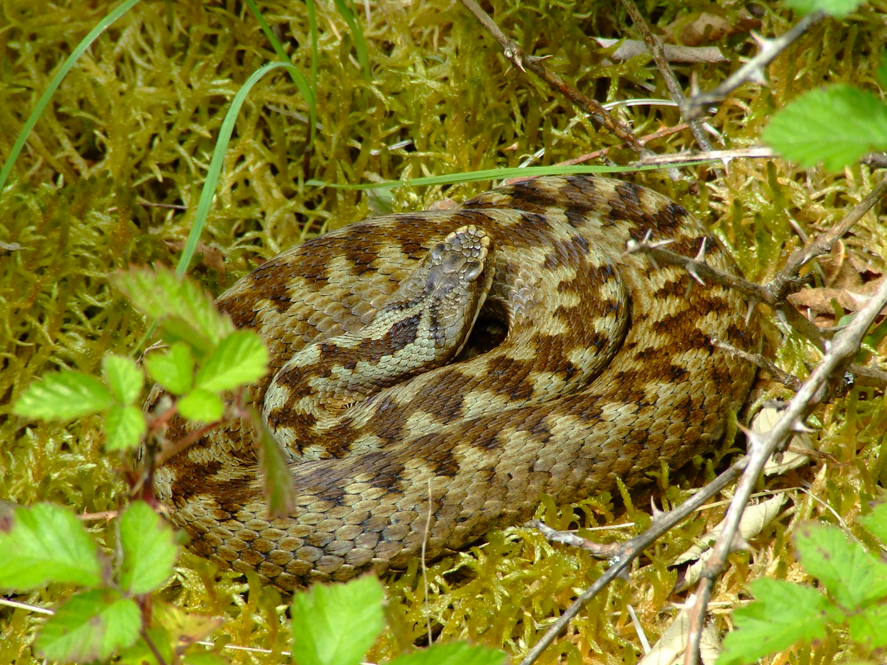

Genetic rescue
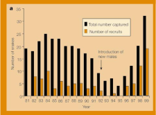
- 20 males from other (large) populations released
- Left for 4 years
- Remaining 8 males returned to source population
- Dramatic increase in recruitment
- Increase in genetic diversity
- Reduction in stillborn offspring
Adders background reading
What is going on?
Why is low genetic variation bad?
- At small population sizes drift overwhelms the rate of mutation
- In isolated populations variation cannot be replaced by gene flow
- Net loss of genetic diversity
Inbreeding depression
- Deleterious alleles more likely to increase in frequency (selection less effective)
- Deleterious alleles tend to be recessive
- Individuals increasingly homozygous as allele frequency increases (Hardy-Weinberg)
Reduced evolutionary potential
- No variation = no evolution
- Unpredictable because we don't know the future precisely (disease, climate change, etc)
Inbreeding depression
Reduced evolutionary potential
Genetic rescue
- 20 males from other (large) populations released
- Left for 4 years
- Remaining 8 males returned to source population
- Dramatic increase in recruitment
- Increase in genetic diversity
- Reduction in stillborn offspring
Conservation genetics
Conservation genetics
- Applied population genetics to help conserve species
How can it help?
- Measure genetic variation
- Measure inbreeding
- Guide breeding programmes
- Identify ancestry
- Wildlife crime
Methods: genetic variation
Heterozygosity
- Measured from a single individual
- How many diploid loci have different alleles
- For example, het sites per kb
Nuceotide diversity (π)
- Population average heterozygosity
- Proportion of het positions between 2 randomly selected chromosomes

Methods: inbreeding
- Chromosome regions are identical by descent
- Can be calculated from pedigrees
- Genome sequencing allows identification of runs of homozygosity (ROH)
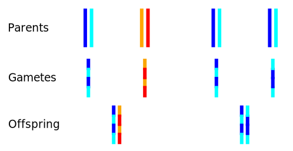
Methods: runs of homozygosity (ROH)
- Total inbreeding = ROH content
- Recent = long ROH
- Older = short ROH
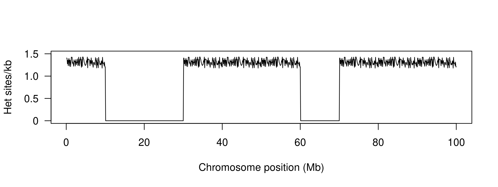
Case studies
White rhinos (Ceratotherium simum)
- Two subspecies: northern and southern
- ~20,000 southern white rhinos (in 2015)
- Northern white rhino functionally extinct (2 females left in 2018)

.jpg)

White rhinos (Ceratotherium simum)

White rhinos background reading
Pumas (Puma concolor)
- Puma/cougar/mountain lion/panther
- Widespread across North and South America
- IUCN listed as least concern
- But some populations are small and isolated
- E.g. Florida panther listed as critically endangered
- 8 females introduced from Texas to reduce inbreeding

Pumas (Puma concolor)
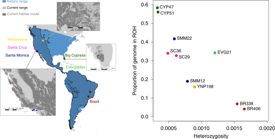
Pumas (Puma concolor)

Pumas background reading
Isle Royale wolves
- Colonised 2-3 wolves in 1940s
- Expanded to 50 individuals
- Crashed to 14 individuals in 1980s
- Notable improvement 1997 with migration of a single male, followed by second crash
- Moose increased in this period
- 2 wolves left in 2018: father-daughter and half sibs
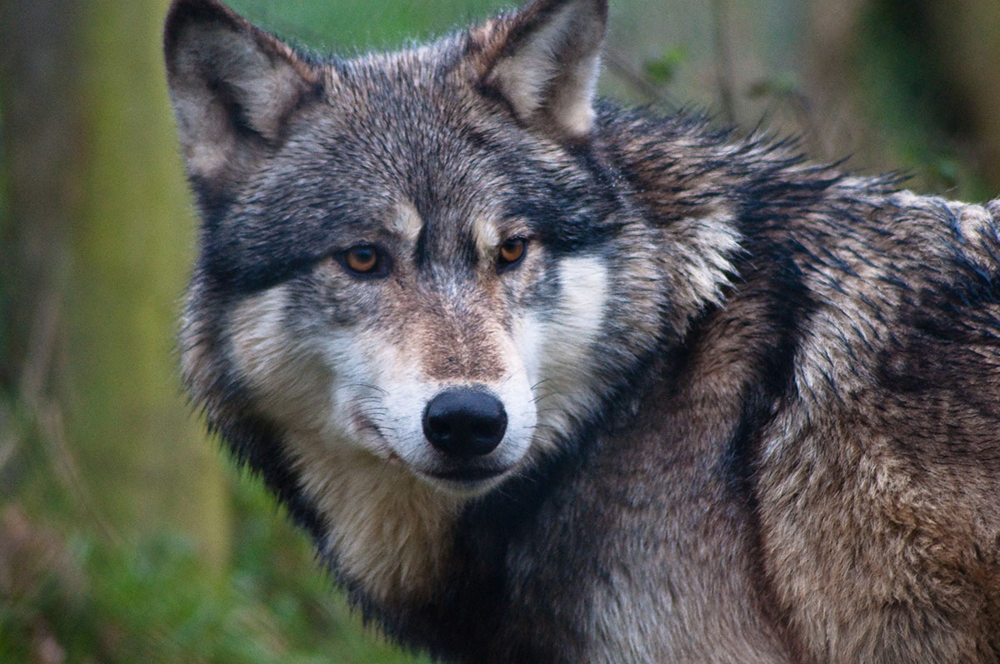
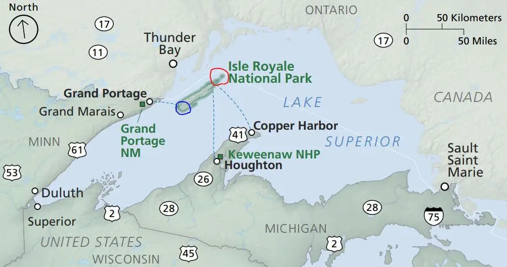
Isle Royale wolves

Wolf reading
Adders, UK
- UK redlist
- Threatened England
- Near threatened Wales, Scotland
- Large scale declines
- Many pops < 10 adults
Adders, chromosome 6.
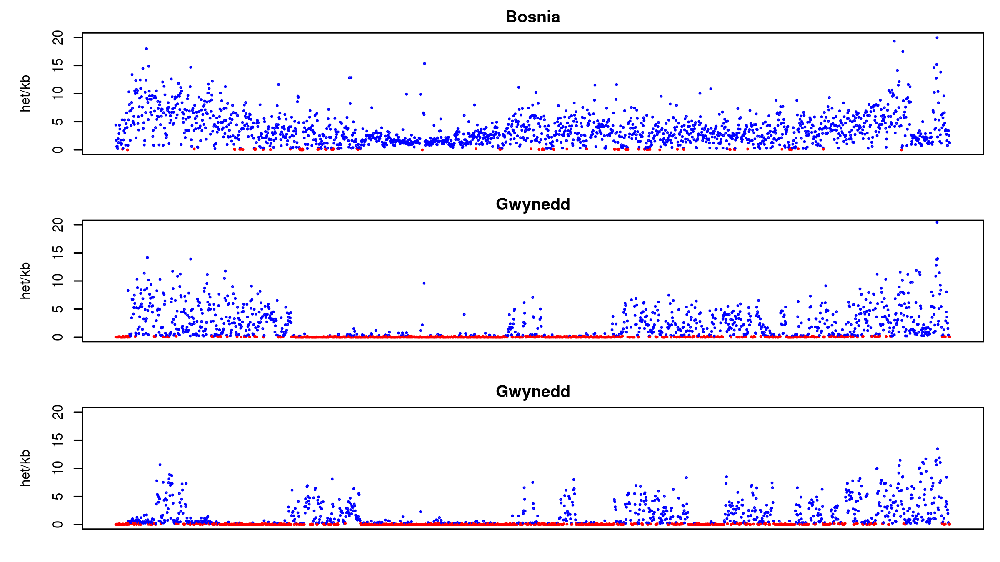
Next time:
Phylogeny 1